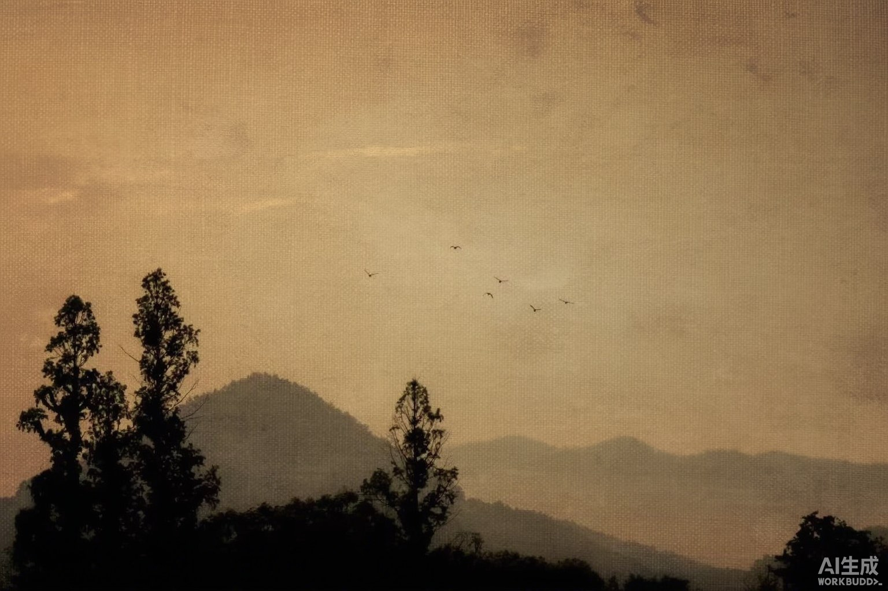
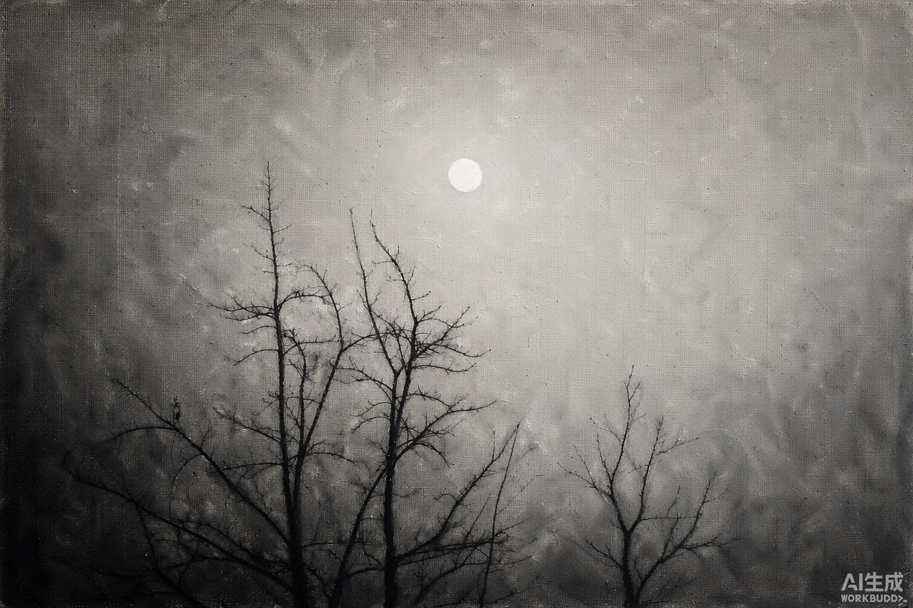
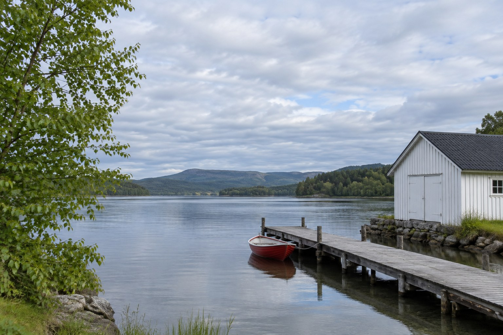
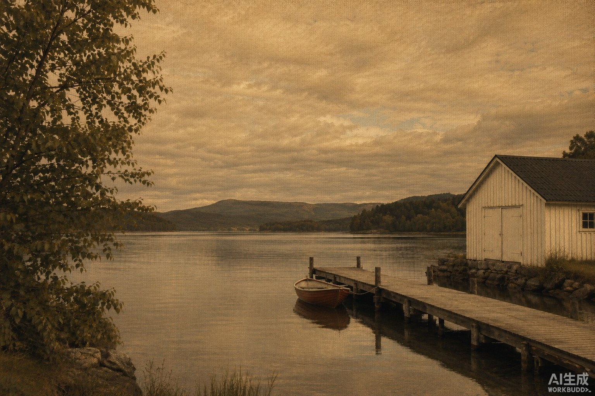
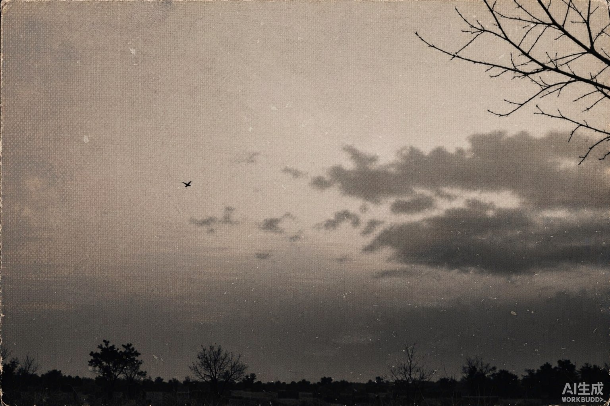
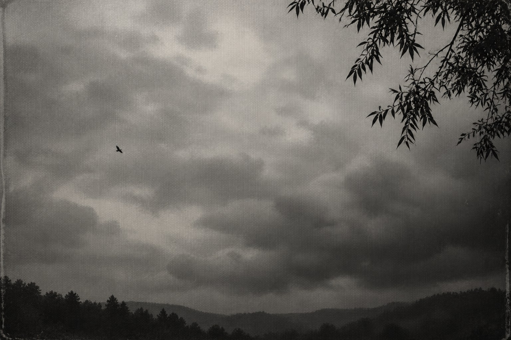

暗幕影像：配方与实测
暖金亚麻油画：可见经纬织纹、晕开色团、羽化边缘、层次退远的山、近黑剪影、一个小而亮的锚点。全部图片为 AI 生成样本，非摄影师作品。
已知工具缺陷：内建 image_gen 在所有输出右下角自动压印「AI生成」水印，提示词明确禁止也无效。下列示例图未做后期移除，保持工具原始输出以供核验。
默认配方：暖金亚麻

默认配方实测样本：金色天空、低山脊层层退远、近黑树影、一小群飞鸟、织纹可见。
烟灰单色变体

单色变体：纯黑白无色偏，枯枝与一轮月，织纹为最强线索。
照片转换：并排对照

输入：自然色、白船屋、木栈桥、红色小船（AI 合成，非真实照片）

输出：重画为暖金亚麻油画。船屋／栈桥／单船位置保留；天空被重绘。
同位置切换
点击切换原图与转换结果，检查屋顶、窗、栈桥与小船的位置。
上一版中性灰配方（仅作对照，非推荐）

旧默认配方复现：织纹与阴云成立，但偏冷灰、金调缺失。

上一版校准图：已被本轮复核判定为少数派色域。
Creative OS 已认可案例
 灰褐海岸、层次、雾化
灰褐海岸、层次、雾化
 植物剪影、暖灰留白
植物剪影、暖灰留白
实测记录 · 实际提示词 · Skill 源文件 · 来源记录